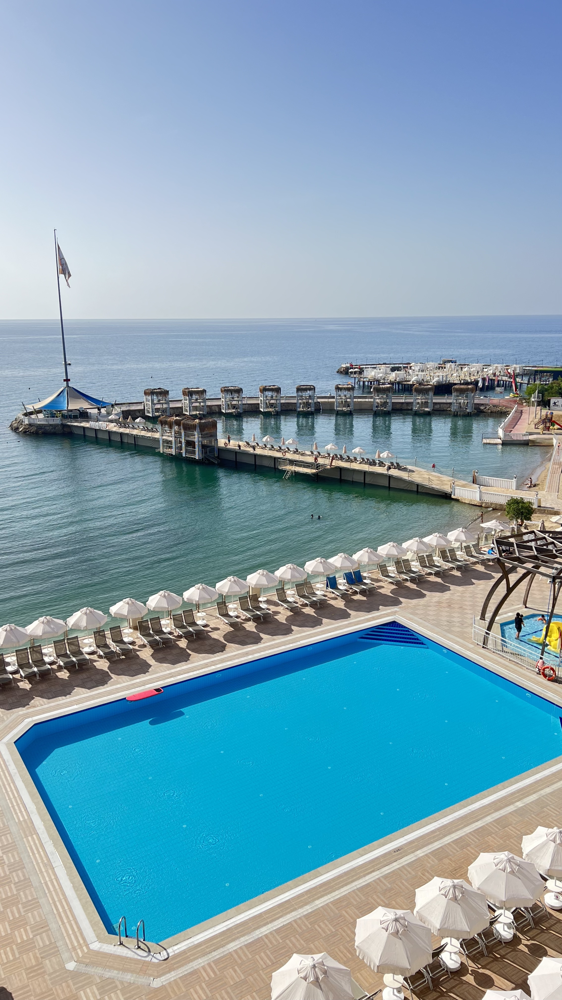
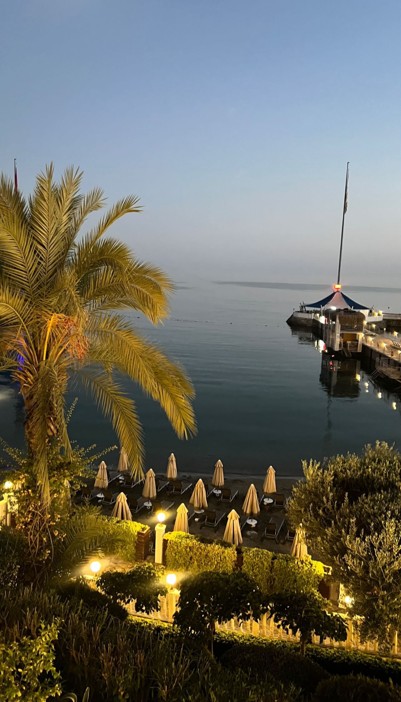
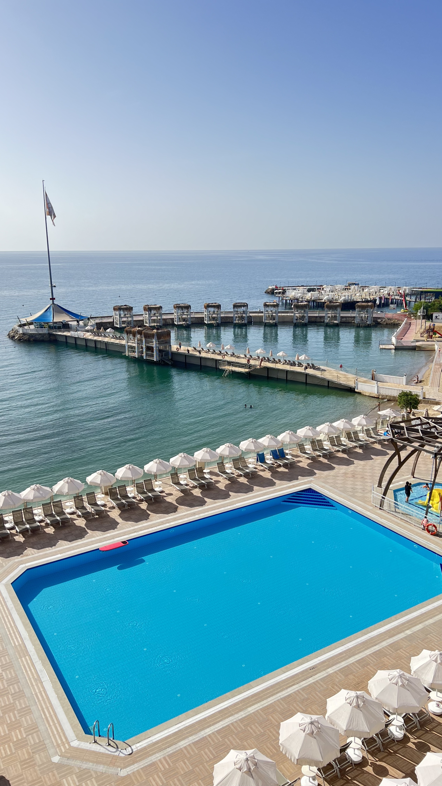
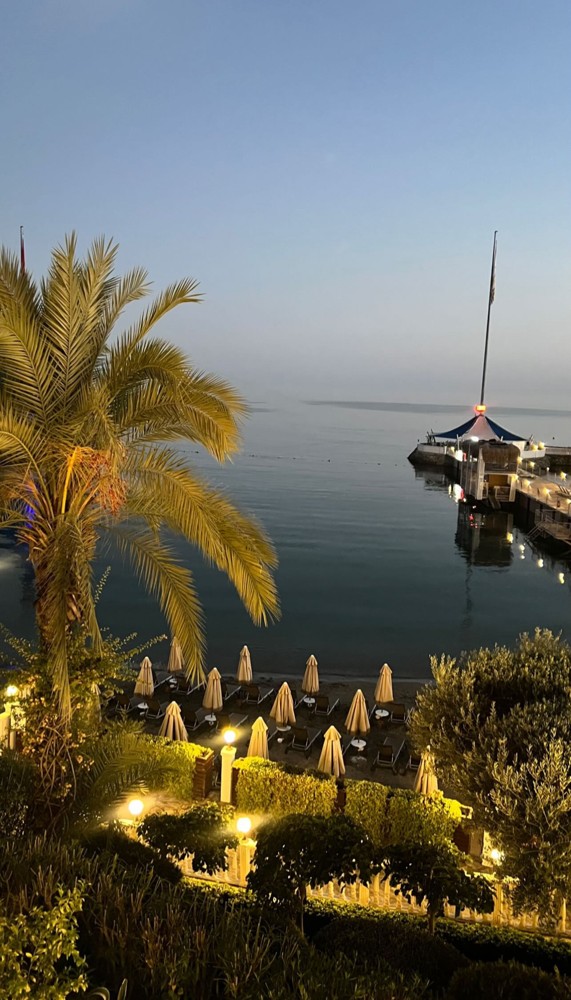

Alanya
Mijn titel
Alanya is een bruisende badplaats aan de Turkse Rivièra, gelegen aan de zuidkust van Turkije. Het is een populaire bestemming vanwege zijn prachtige stranden, rijke geschiedenis en levendige atmosfeer. Langs de kustlijn van Alanya strekken zich kilometerslange gouden zandstranden uit, zoals Cleopatra Beach, dat bekend staat om zijn fijnkorrelige zand. De stranden zijn perfect om te zonnebaden, zwemmen en diverse watersporten.
Adin hotel
Adin Beach Hotel bevindt zich direct aan het strand, met een prachtig uitzicht op de Middellandse Zee. Het hotel biedt drie privéstrandgebieden, waaronder een exclusief strand voor vrouwen, een exclusief strand voor mannen en een gemengd strand genaamd Damlatash, ideaal voor gezinnen. Wat betreft maaltijden, hanteert het hotel een all-inclusive service, wat betekent dat de prijzen inclusief ontbijt, lunch, diner, snacks tussen de maaltijden, toegang tot de zwembaden, de spa en het strand zijn. Er zijn in totaal drie privéstrandgebieden: één exclusief voor vrouwen, één exclusief voor mannen en één gemengd strand voor families. Voor de zwembaden zijn er specifieke zones, zoals drie buitenzwembaden exclusief voor vrouwen met twee kinderbaden, één overdekt zwembad exclusief voor vrouwen met kinderbad, twee buitenzwembaden exclusief voor mannen met kinderbad, één overdekt zwembad exclusief voor mannen met kinderbad, en één buitenzwembad voor gemengde families met kinderbad. Wat betreft sport en vrijetijdsbesteding, biedt het hotel activiteiten zoals aerobics, aqua aerobics, darts, pooltafel, tafeltennis en beachvolleybal. Voor gezondheid en ontspanning zijn er faciliteiten zoals een sauna, fitnessruimte, massagezalen (tegen betaling), Turks bad en stoombad, elk apart voor mannen en vrouwen. Het hotel zorgt ook voor entertainment met zomerseizoenactiviteiten en avondentertainment, waaronder spellen, sporten, shows, live volksmuziek, poëzie en komediespelen. Voor de jongere gasten is er een mini-club, kinderspeelplaats, speelruimte, en speciale kinderzwembaden en waterglijbanen.
Voor de jongere gasten is er een mini-club, kinderspeelplaats, speelruimte, en speciale kinderzwembaden en waterglijbanen.
Mijn titel
 
